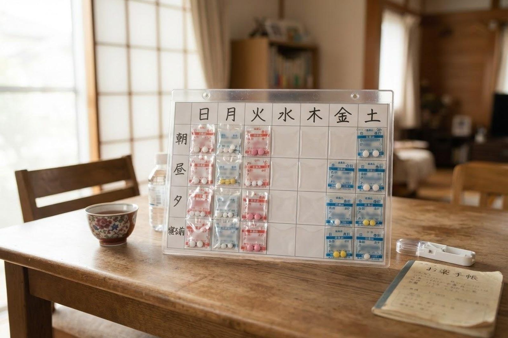

親が薬を飲み忘れます。どうすればよいですか？
A. 回答飲み忘れは、本人の意思の問題ではなく、仕組みで減らせることがほとんどです。薬の種類が多い、飲む回数がばらばら、袋から出しにくい——原因を一つずつ取り除いていきます。まとめて一包にする、日付ごとに並べる、処方そのものを見直すといった方法があります。残った薬は捨てずに、受診のときにそのままお持ちください。

まず試したい工夫
- 一包化：飲むタイミングごとに、複数の薬を1つの袋にまとめてもらう方法です。袋に日付や「朝」「夕」を印字してもらうこともできます。薬局にご相談ください。
- お薬カレンダー・整理ケース：壁掛けの日付ごとのポケットに入れておくと、飲んだかどうかが目で見てわかります。ご家族が離れていても、写真を送ってもらえば確認できます。
- 置き場所を決める：食卓の上など、生活動線のうえに固定します。しまいこむと忘れます。
- 声かけのタイミングを決める：電話をかける時間を薬の時間に合わせる方法もあります。
薬そのものを減らせないか相談してください
飲む回数や種類が多いほど、忘れやすくなります。医師に相談することで、次のような調整ができる場合があります。
- 1日3回を1回や2回にまとめられないか
- 同じような働きの薬が重なっていないか
- 剤形を変えられないか（口の中で溶けるもの、貼るものなど）
- いま本当に必要な薬かどうかを、あらためて確認する
複数の医療機関にかかっていると、全体を把握している人がいない状態になりがちです。お薬手帳を1冊にまとめ、受診のたびに全部お見せください。
残った薬は捨てないでください
飲み残しがあると、正直に言いにくいと感じるご家族が多いのですが、残薬は伝えていただいたほうが良い情報です。どれがどれくらい残っているかで、どの薬が飲みにくいのかがわかります。責めることが目的ではありません。袋のまま受診時にお持ちいただくか、薬局にお持ちください。日数の調整ができ、費用の無駄も減ります。
人の手を借りる方法
- 薬剤師の訪問：薬剤師がご自宅を訪問し、薬の管理や整理を行う仕組みがあります（居宅療養管理指導）。
- ホームヘルパー：飲むタイミングに合わせて訪問し、服薬の介助を行えます。
- 訪問看護：飲めているかの確認、体調への影響の観察を行います。
- デイサービス：昼の分を事業所で飲む形にすると、その分の心配が減ります。
すぐに医療機関へご相談ください
- 同じ薬をまとめて飲んでしまった可能性があるとき
- ふらつき、強い眠気、ろれつが回らない、冷や汗といった様子があるとき
- 血糖や血圧、血液をさらさらにする薬を、飲んだかどうかわからなくなったとき
早めのご相談をおすすめします
- 残薬が明らかに増えている
- 飲む時間や薬をたびたび間違える
- 薬を飲んだこと自体を覚えていない
- 薬を飲むことを強く拒むようになった
当院での対応
当院ではかかりつけ医として、他の医療機関の受診状況や処方内容を把握したうえで服薬の管理を行っています。飲み忘れが増えてきた、種類が多すぎるといったご相談を、診察のときにお聞かせください。訪問診療を受けている方についても同様です。
当院では訪問診療・訪問看護を行っているほか、デイサービス・訪問介護・小規模多機能ホーム「こはる日和」、かしわじま居宅介護支援センター、サービス付高齢者向け住宅「メディケアビレッジかしわじま」を運営しています。医療と介護のどちらの窓口からでもご相談いただけます。
本ページは一般的な情報提供を目的としています。介護保険の制度は改正されることがあり、手続きや金額は年度・自治体によって異なります。最新の内容は倉敷市（介護保険課）または担当のケアマネジャーにご確認ください。ご不明な点はお電話（086-525-0600）にてお問い合わせください。
薬が多すぎる、飲めていないというご相談をお受けしています。
最終更新：2026年8月26日